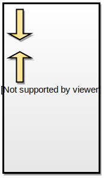

Proceso de compilación
Hola mundo!
Asumiendo el archivo se llama hola_mundo.c
#include <stdio.h>
int main()
{
printf("Hola Mundo\n");
return (0);
}
$ gcc hola_mundo.c -o hola_mundo -Wall
Fases en la creación de un programa

Los alumnos optarán el turno al que asistirán según su disponibilidad horaria
La aprobación de la cursada estará dada por la aprobación de cuatro evaluaciones en máquina presenciales:
Si se desea mejorar la nota se podrá realizar una extensión del trabajo realizado en la cursada. La nota final se promediará con el desempeño durante la cursada
Además, programar en C, motiva la adopción de buenas prácticas de programación
Asumiendo el archivo se llama hola_mundo.c
#include <stdio.h>
int main()
{
printf("Hola Mundo\n");
return (0);
}
$ gcc hola_mundo.c -o hola_mundo -Wall
| Tipo | Descripción | 32bits | 64bits |
|---|---|---|---|
char |
caracter | 8 | 8 |
short |
entero corto con signo | 16 | 16 |
int |
entero con signo | 32 | 32 |
long |
entero largo con signo | 32 | 64 |
| Tipo | Descripción | 32bits | 64bits |
|---|---|---|---|
float |
flotante simple | 32 | 32 |
double |
flotante doble | 64 | 64 |
pointer |
puntero a una posición de memoria | 32 | 64 |
void |
idem char. Empleado para tipos genéricos |
- | - |
La expresión:
3.45 – 1.2e+34
Significa 3.45 - (1.2*1034)
| Base | Representación |
|---|---|
| Decimal | 14 |
| Hexadecimal | 0xE |
| Octal | 016 |
Determinan si el entero es con signo, corto o largo:
| Literal | Representación | Significado |
|---|---|---|
23L |
decimal | 23 long int |
23LU |
decimal | 23 unsigned long int |
023LU |
octal | 19 unsigned long int |
0XFUL |
hexadecimal | 15 unsigned long int |
char o int (valor ASCII) de forma indistintachar |
Significado |
|---|---|
'A' |
Letra A mayúscula |
'\n' |
Salto de linea. Equivale a '\x0A'
|
'\0' |
Fin de string o NULL o cero |
'\x0A' |
Idem '\n' en hexadecimal |
'\012' |
Idem '\n' en octal |
'A' no es lo mismo que `"A"
['A','\0']
Se utilizan para enumerar una lista de valores constantes
enum estado_civil {casado, soltero, viudo, separado, divorciado, NSNC,
estado_civil_TOPE };
enum meses { ENE=1, FEB, MAR, ABR, MAY, JUN, JUL, AGO, SEP, OCT, NOV, DIC,
meses_TOPE };

int x; /* Variable global */
int main() {
int y; /* Variable automatica */
char *str; /* Variable automatica cuyo valor es la posición
* de memoria de otra variable
*/
str = malloc(50); /* Es en esta instancia donde se aloca memoria
* en la heap
*/
...
}
int main( ) {
int v_entero;
int *p;
v_entero = 7;
p = &v_entero;
...

|

|

|
& permite acceder a la dirección de la variableEs posible realizar la incialización en la declaración
int x = 9;
int j, x = 12;
int j = 12, x;
char c = 'x';
const int x = 12;
char c, linea[80];
char nombre[] = "Juan";
const char mensaje[] = "Saludos!!";
Recordar que las últimas dos cadenas son arreglos de char terminadas en '\0'
['J','u','a','n','\0']
['S', 'a', 'l', 'u', 'd', 'o', 's', '!', '!', '\0']
(tipo) expresion
lvalue = rvalue
int a char se eliminan los bits de orden superiorfloat a int se trunca la parte fraccionariadouble a float se aplica redondeolong) se convierten en short o en char
eliminando los bits de orden superiorlong double, se convierte el otro a long double
double, se convierte el otro a double
float, se convierte el otro a float
long, se convierte el otro a long
int, se convierte el otro a int
char a short
Asumiendo el siguiente código
int x = 64, y = 357;
float f = 4.95;
char c;
c = x;
x = c;
c = y;
y = c;
y = f;
¿Con qué valores quedan x, y, f, c?
= retorna el valor asignado, de forma tal de permitir
asignaciones encadenadas+, -, *, /, %
&&, || !
==, !=,<, >,..
Cualquier valor distinto de 0 (cero) es VERDADERO. El 0 (cero) es FALSO
Es común usar de forma equivocada el símbolo = como comparación
int x = 3;
if ( x = 3 ) /* siempre será true */
if ( x == 3 ) /* Uso correcto */
Se definen los operadores +=, -=, *=, /=, etc
Permiten realizar una asignación comprimida
x += 6; /* equivale a x = x + 6 */
Permiten incrementar/decrementar una variable en 1
Puede ser en forma prefija o postfija:
x++;
++x;
/* Ambos equivalen a x = x + 1 */
¿Con qué valores quedan?
int n = 5, x, y;
x = ++n;
y = n++;
El operador condicional if then else: _?_:_
e1 ? e2 : e3
El operador sizeof que devuelve el tamaño de un tipo o variable
int x=2;
sizeof(x);
sizeof(int);
& (AND), | (OR), ^ (OR exclusivo), <<, >> (desplazamientos de bits a derecha o
izquierda), ~(complemento a 1)&& y con ||